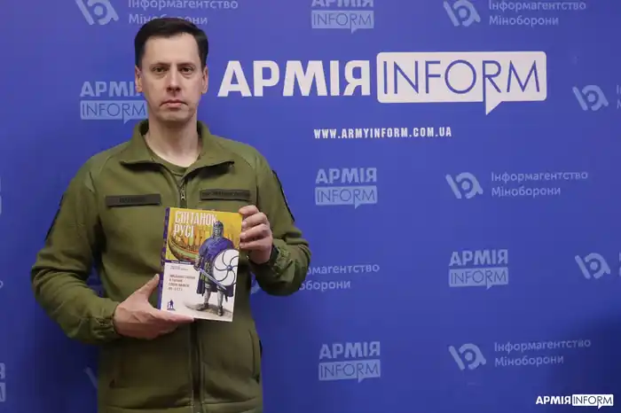

Артем Папакін — кандидат історичних наук, викладач кафедри історії Центральної та Східної Європи історичного факультету Київського національного університету імені Тараса Шевченка, а нині — військовослужбовець Центру досліджень воєнної історії Збройних Сил України.
Пише книги серії "Militaria Ukrainica" — це перша і на сьогодні єдина в Україні серія книг з військово-історичної тематики, яка поєднує ретельне опрацювання джерел та наукових досліджень з популярним форматом викладу матеріалу й унікальними ілюстраціями, на яких представлено реконструкції воїнів. Такий формат доволі відомий у світі насамперед завдяки видавництву "Osprey", яке вже багато десятиліть публікує серії військово-історичних праць.
Перша книга під назвою "Діти Таргітая", присвячена війнам скіфів. Друга книга під назвою "Світанок Русі. Військова справа в Україні епохи вікінгів (IX–X ст.)", присвячена одній з цікавих сторінок української військової історії — добу вікінгів напередодні виникнення східнослов'янської держави з центром у Києві.